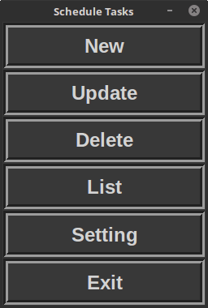
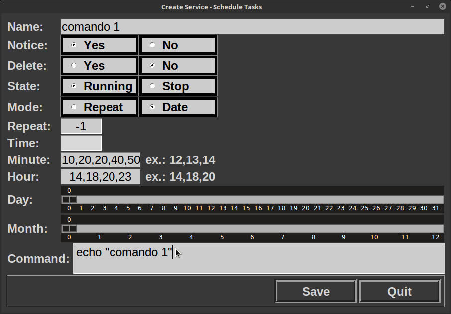
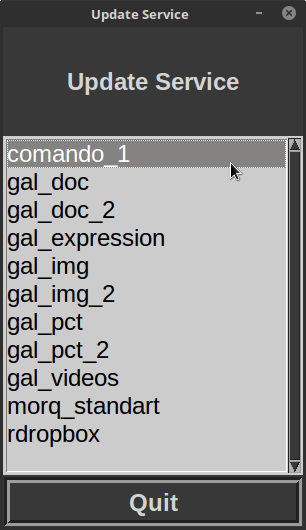
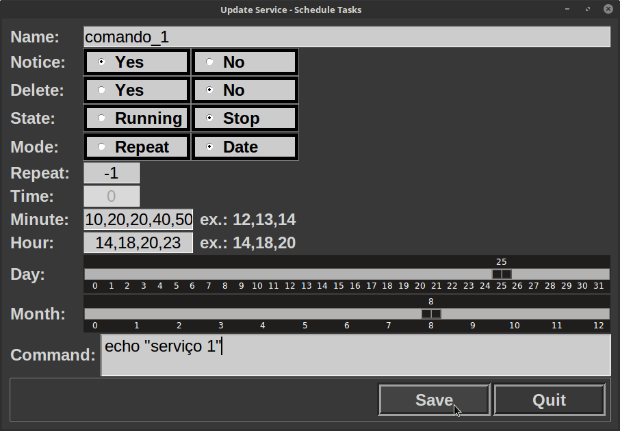
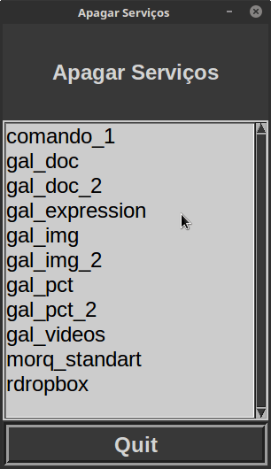
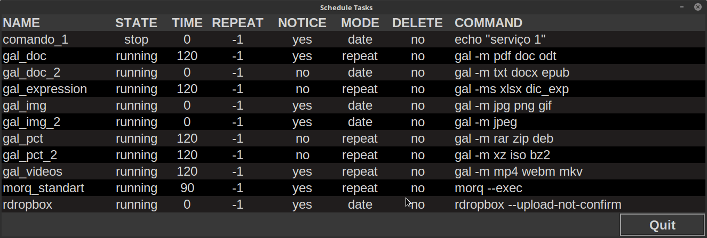

Quarta etapa - GUI
Desenvolvimento da GUI
A interface gráfica de usuário - Graphic User Interface - foi escrita com a framework gráfica Tkinter, nativa de Python.
Na figura abaixo é possível ver o menu principal.
Esta é a interface de criação de serviço. Ela incorpora diversos componentes distintos. Procurei variar um pouco nas escolhas dos widgets, sempre buscando trazer mais praticidade e intuitividade para o usuário.
Clicando no botão "Update" do menu principal, é aberta uma subjanela com uma lista dos serviços que foram criados. Para acessar um desses serviços dê um duplo clique no nome do serviço desejado.
A janela de alteração de serviço carrega os dados do serviço escolhido para serem alterados. Caso seja alterado o nome do serviço, um novo serviço será criado, e não alterado. Por que isso? Porque isso permite criar um serviço similar sem precisar configurar um novo serviço, se altera apenas o que se deseja e se cria um novo serviço, parecido com a opção salvar como dos editores de textos e outros programas de manipulação de dados.
Excluir um serviço é simples e fácil. No menu principal, clique no botão "Delete", na subjanela aberta, mostrada na figura abaixo, dê um duplo clique no serviço que deseja excluir, abrirá uma janela de diálogo, é só confirma e o serviço será apagado.

Abaixo temos uma lista com os serviços criados e ordenados alfabeticamente.
Por fim, na última imagem, temos as opções de configuração do arquivo principal ao qual é possível determinar a interrupção do programa.